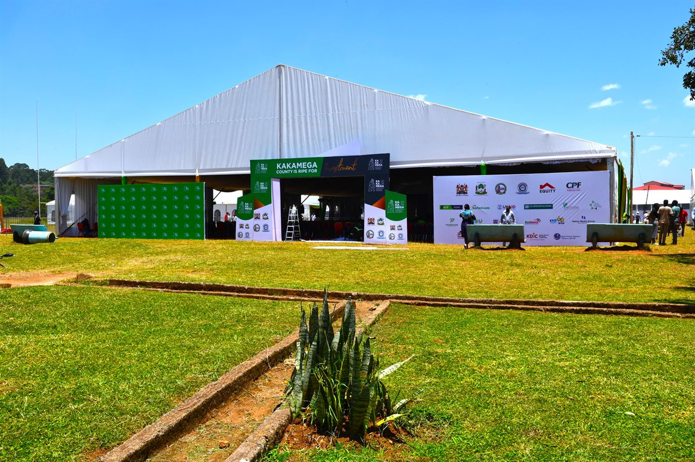
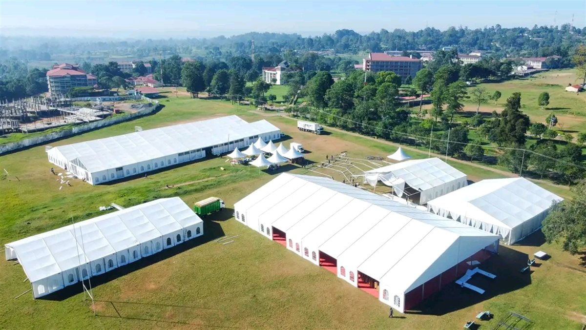
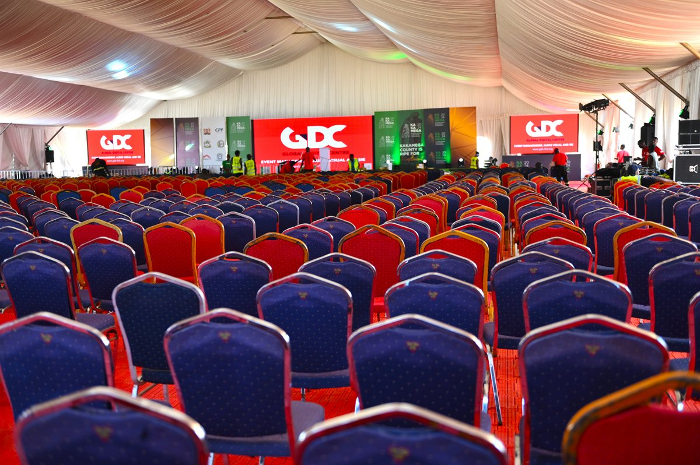
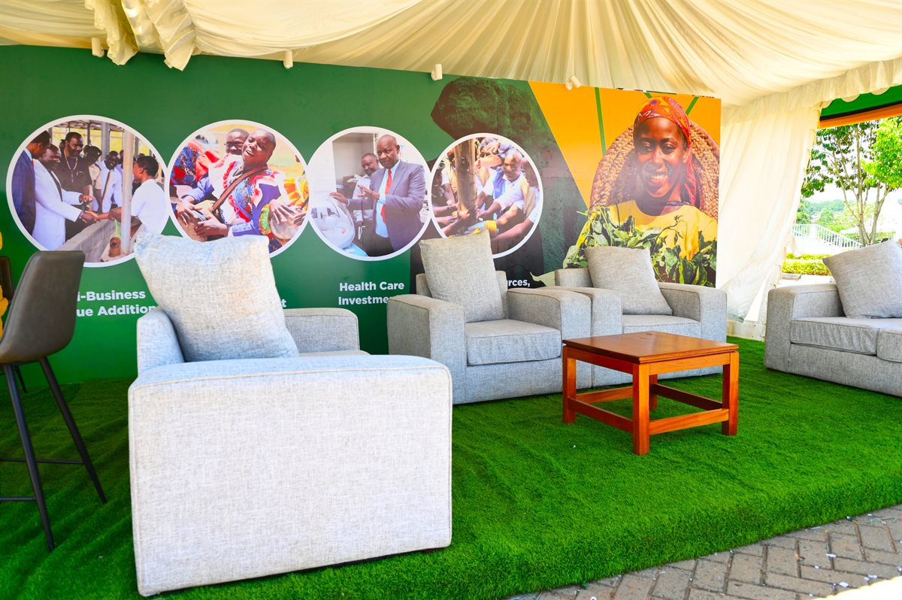

Investment Conference / GDC PROJECT
KAIICO 2024
The inaugural KAIICO 2024 brought together government leaders, investors, development partners, and industry stakeholders to explore investment opportunities across Kenya's counties under the theme "Opening up Counties as the New Frontiers for Investment and Development."
Kakamega International Investment Conference (KAIICO) 2024
Client: County Government of Kakamega
Date: 19–22 March 2024
Venue: Masinde Muliro University of Science and Technology (MMUST), Kakamega
Catalyzing Investment in Kenya's Counties
The inaugural KAIICO 2024 brought together government leaders, investors, development partners, and industry stakeholders to explore investment opportunities across Kenya's counties under the theme "Opening up Counties as the New Frontiers for Investment and Development."
The high-level conference attracted over 2,000 delegates & 250 exhibitors and was officially opened by H.E President Dr. William Ruto, with notable participation from Ms. Meg Whitman, the former US Ambassador to Kenya and Wamkele Mene, the SG, AfCFTA alongside government leaders, global investors, and development institutions.
GDC was engaged to deliver the conference environment and event execution, ensuring a professional platform capable of hosting high-level dialogue, exhibitions, and investment engagement.
PROJECT GALLERY
A closer look.




PROJECT FILM